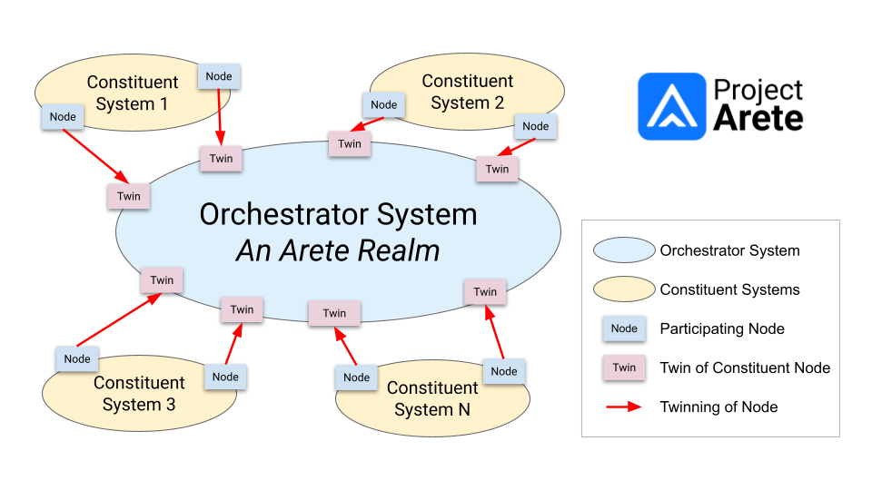
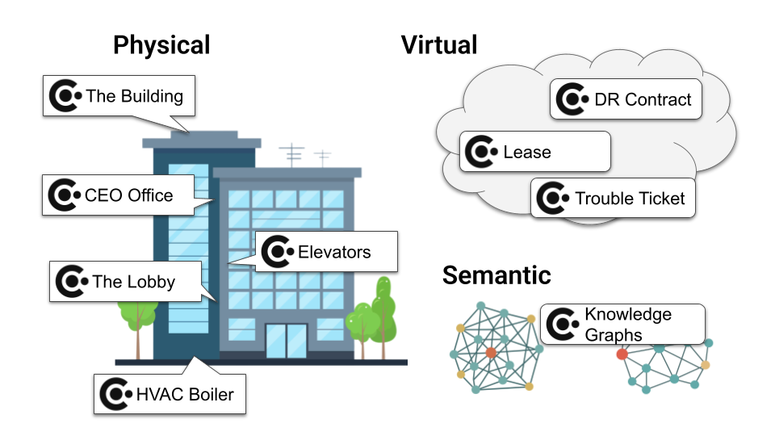
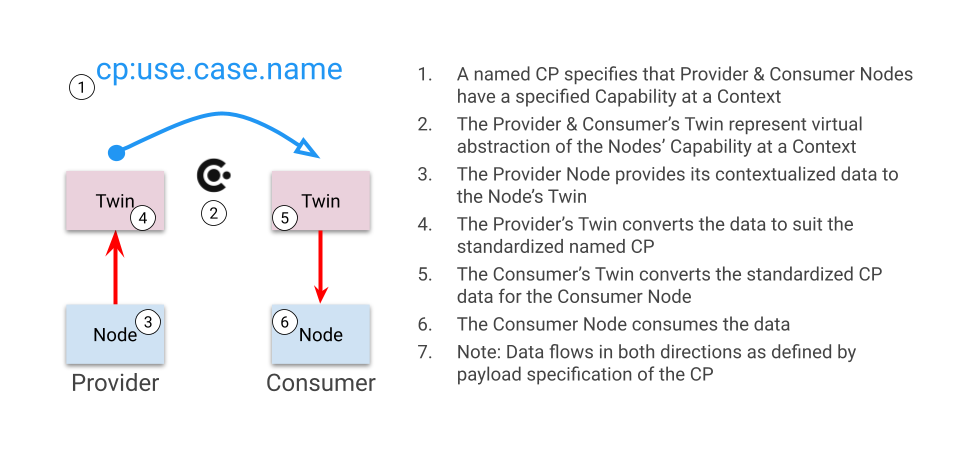

Project Arete
Project AreteHow an Arete Realm Comes Together
The Arete orchestration process is a practical framework for securely connecting systems across diverse domains. Three steps bring order to interoperability: gathering nodes within defined contexts, matching those contexts, and binding capabilities through standardized Connection Profiles.

Step 1: Gathering Nodes
The orchestrator collects all Nodes within its Realm through the onboarding twinning process from Constituent Systems, building a synchronized inventory of Node twins that can be filtered or grouped by origin and attributes.
Orchestrator and Constituent Systems are IP-connected — on the public Internet or within private networks. The orchestrator maintains its synchronized inventory wherever systems are hosted, supporting policy-driven coordination across cloud and on-premises environments alike.

Step 2: Matching Contexts
Context is the organizing principle that groups nodes for secure interaction. A context can be physical — a building, a room, a piece of equipment. It can be virtual — a contract, a lease, a ticket in a business process. And it can be semantic, derived from rich models like knowledge graphs.
Arete therefore orchestrates interactions not only by location or asset, but by contracts, service processes, or shared meaning.

Step 3: Binding Capabilities
Once Contexts match, the orchestrator analyzes each Node’s Capabilities — each described by a standardized Connection Profile. Providers are paired with Consumers, and every valid match becomes an enforceable, policy-driven connection instance.
Built to evolve
Because Arete is designed around dynamic orchestration, Nodes and their Contexts continuously evolve. Capabilities can be added, removed, or adapted without changing the underlying network or anything outside the orchestrated Realm.
Each Node can participate in many contexts and offer multiple capabilities across its operational lifecycle — a genuinely adaptive environment that meets both immediate and future integration needs, reflecting how assets, services, and systems naturally change and grow.